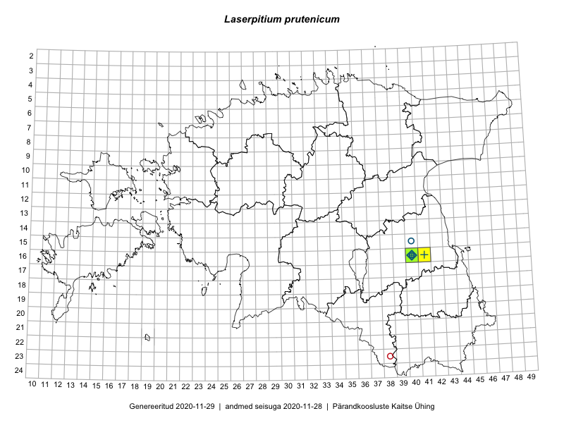

Laserpitium prutenicum — ahtalehine kareputk
Kaardile koondatud taksonid: Laserpitium prutenicum L. (34)

Kaart põhineb 34 kirjel, neist:
vaatlusi 30
eksemplare 4
Kaasaegsed1 leiukohad asuvad 1 ruudus.
Andmed “Eesti taimede levikuatlasest”,2 sulgudes ruutude arv:3
● 1971–2005 (1)
○ 1921–1970 (3)
△ kuni 1920 (0)
+ hävinud (0)
? kaheldav (0)
Lisaruudud teistest andmebaasidest:4
ELF: 2006– . . . (1)
PKÜ: 2006– . . . (0)
ELF: 1971–2005 (0)
PKÜ: 1997–2005 (0)
| Ruut | Vaatleja(d) | Vaatlusaeg | Kirje PlutoFis |
|---|---|---|---|
| 16-40 | Thea Kull | 2015-07-07 | ruut/ala: Laserpitium prutenicum L. |
| 16-40 | Maret Gerz, Ott Luuk | 2014-06-25 | ruut/ala: Laserpitium prutenicum L. |
| 16-40 | Peedu Saar | 2016-05-22 | ruut/ala: Laserpitium prutenicum L. |
| 16-40 | Peedu Saar | 2016-05-22 | punkt: Laserpitium prutenicum L. |
| 16-40 | Ott Luuk | 2017-06-05 | punkt: Laserpitium prutenicum L. |
| 16-40 | Meeli Mesipuu | 2017-07-22 | ruut/ala: Laserpitium prutenicum L. |
| 16-40 | Meeli Mesipuu | 2017-07-22 | punkt: Laserpitium prutenicum L. |
| 16-40 | Meeli Mesipuu | 2017-07-22 | punkt: Laserpitium prutenicum L. |
| 16-40 | Meeli Mesipuu | 2017-07-22 | punkt: Laserpitium prutenicum L. |
| 16-40 | Meeli Mesipuu | 2017-07-22 | punkt: Laserpitium prutenicum L. |
| 16-40 | Meeli Mesipuu | 2017-07-22 | punkt: Laserpitium prutenicum L. |
| 16-40 | Meeli Mesipuu | 2017-07-22 | punkt: Laserpitium prutenicum L. |
| 16-40 | Meeli Mesipuu | 2017-07-22 | punkt: Laserpitium prutenicum L. |
| 16-40 | Meeli Mesipuu | 2017-07-22 | punkt: Laserpitium prutenicum L. |
| 16-40 | Meeli Mesipuu | 2017-07-22 | punkt: Laserpitium prutenicum L. |
| 16-40 | Meeli Mesipuu | 2017-07-22 | punkt: Laserpitium prutenicum L. |
| 16-40 | Meeli Mesipuu | 2017-07-22 | punkt: Laserpitium prutenicum L. |
| 16-40 | Meeli Mesipuu | 2017-07-22 | punkt: Laserpitium prutenicum L. |
| 16-40 | Meeli Mesipuu | 2019-07-17 | ruut/ala: Laserpitium prutenicum L. |
| 16-40 | Thea Kull | 2019-07-24 | punkt: Laserpitium prutenicum L. |
| 16-40 | Thea Kull | 2019-07-24 | punkt: Laserpitium prutenicum L. |
| 16-40 | Thea Kull | 2019-07-24 | punkt: Laserpitium prutenicum L. |
| 16-40 | Thea Kull | 2019-07-24 | punkt: Laserpitium prutenicum L. |
| 16-40 | Thea Kull | 2019-07-24 | punkt: Laserpitium prutenicum L. |
| 16-40 | Thea Kull | 2019-07-24 | punkt: Laserpitium prutenicum L. |
| 16-40 | Thea Kull | 2019-07-24 | punkt: Laserpitium prutenicum L. |
| 16-40 | Thea Kull | 2019-07-24 | punkt: Laserpitium prutenicum L. |
| 16-40 | Thea Kull | 2019-07-24 | punkt: Laserpitium prutenicum L. |
| 16-40 | Thea Kull | 2019-07-24 | punkt: Laserpitium prutenicum L. |
| 16-40 | Thea Kull | 2019-07-24 | punkt: Laserpitium prutenicum L. |
| 16-40 | Toomas Kukk | 2007-07-09 | TAA0076822: Laserpitium prutenicum L. |
| 16-40 | Toomas Kukk | 2007-07-09 | TAA0076823: Laserpitium prutenicum L. |
| 16-40 | Ott Luuk | 2008-07-28 | TAA0076824: Laserpitium prutenicum L. |
| 16-40 | Peedu Saar | 2018-06-17 | TAA0145884: Laserpitium prutenicum L. |
Kaasaegsed leiukohad (tähistatud värvitud ruutudega) põhinevad peamiselt 2014–2019 välitööandmetel. Väiksemal määral on andmebaasi kantud vanemaid leiuandmeid aastatest 2006–2013.↩︎
Kukk, T., Kull, T., Eesti taimede levikuatlas. Eesti Maaülikool, Põllumajandus- ja Keskkonnainstituut, Tartu, 2005.↩︎
NB! 2005. aasta atlase andmestikus katavad uuemad leiud vanemaid. Näiteks kui liik on ruudus registreeritud 1971–2005, siis pole võimalik öelda, kas ta oli sellest ruudust teada ka enne 1970. aastat. Vana atlase andmetel hävinud ja kaheldavaid leiukohti pole hilisemate (taas)leidude põhjal korrigeeritud.↩︎
Eestimaa Looduse Fondi (ELF) ja Pärandkoosluste Kaitse Ühingu (PKÜ) andmebaasid sisaldavad inventeeritud koosluste kirjeldusi ja liigiloendeid. Neist andmekogudest on kaardile lisatud lisatud vaid need ruudud, millest uue atlase andmekogus taksoni kohta kirjeid veel pole. Kõrvale on jäetud teadaolevalt kaheldavad määrangud. Kaartidel katavad uuema perioodi andmed vanemaid, PKÜ omad ELFi omi. Kattumise tõttu võib kaardil näha olla vähem mingi kategooria ruute kui legendis olev arv näitab. ELFi ja PKÜ andmed ei kajastu hetkel vaatluste tabelis ega ruutude liigiloendites.↩︎